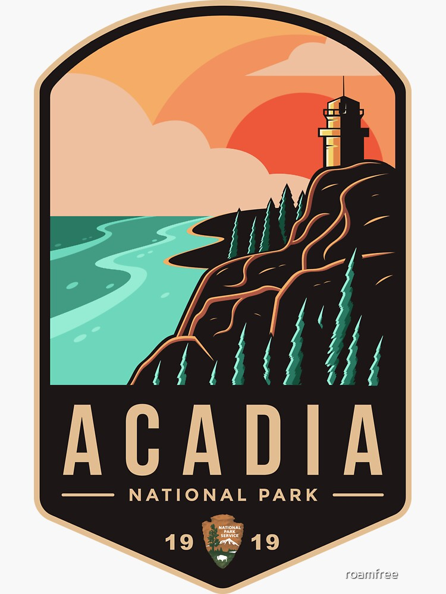

|  | Acadia National Park |
People have been drawn to the rugged coast of Maine throughout history. Awed by its beauty and diversity, early 20th-century visionaries donated the land that became Acadia National Park. The park is home to many plants and animals, and the tallest mountain on the U.S. Atlantic coast. Today visitors come to Acadia to hike granite peaks, bike historic carriage roads, or relax and enjoy the scenery.
Maine
Did You Know?
Acadia National Park contains more than 120 miles of historic hiking trails. Many of these trails were established by local village improvement societies in the late 1800s and early 1900s. Today many of the historic features, such as stonework, are still visible.
Acadia National Park Website